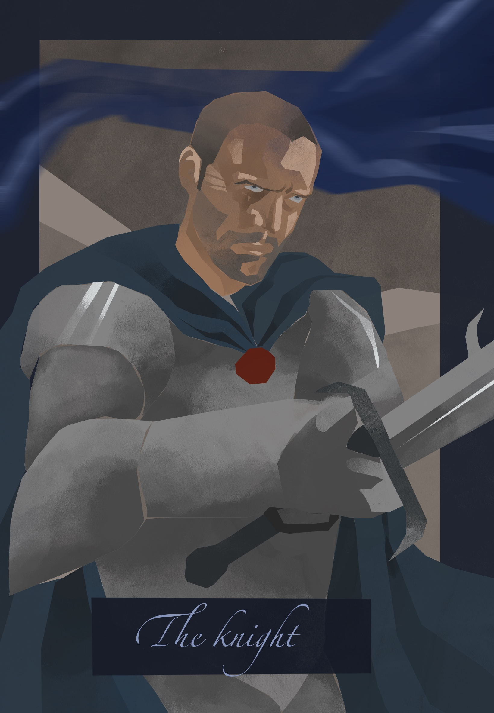

The Knight
In the Iliac Bay, there exists no shortage of men bearing illustrious titles, their heraldry invented and forgotten in the span of one life.
But where most knights inherit their titles from noble birth, Sir Rodig of Camlorn was born low. The son of a fishmonger.
When he was still no more than a boy, he was conscripted into one of a dozen ragged lord's militias. Even then he was as tall as a man grown, and every bit as strong. His first skirmish was brief and petty, its only lasting consequence being the warrior it produced.
Rodig adopted the stylings of a mercenary shortly thereafter, traveling the Iliac Bay, pledging his sword to any king or lord who had need of it. His travels, combat experience, and sheer physical strength made him an attractive candidate for the Blades, who, among other things, promised him knighthood.